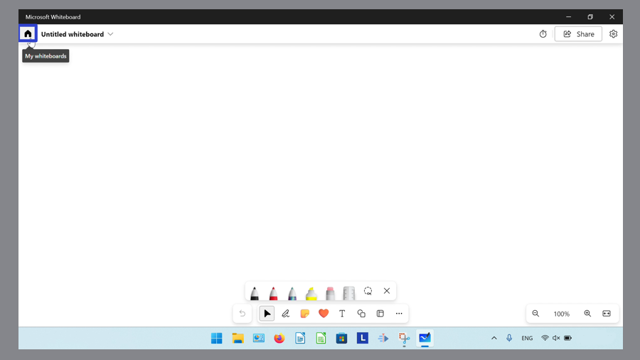

How to Close the Microsoft Whiteboard App (Windows 11)
This tutorial covers:
How to Delete a Whiteboard
How to Close Microsoft Whiteboard:
No time to scroll down? Click through this presentation tutorial:
Watch a tutorial video:
How to Delete a Whiteboard
- Step 1: First open a whiteboard. In the upper left click the “My whiteboards” or house button. 
- Step 2: Hover over a whiteboard and click the “More options” or “…” button.
- Step 3: In the menu that opens, click “Delete”. In the window that opens, click “Delete”.
How to Close Microsoft Whiteboard With Click
- Step 1: Open Microsoft Whiteboard. In the upper right click the “Close” or “X” button.

How to Close Microsoft Whiteboard With Right Click
- Step 1: First open Microsoft Whiteboard. Go down to the taskbar and right click the Microsoft Whiteboard app icon.

- Step 2: In the menu that opens, click “Close window”.

How to Close Microsoft Whiteboard With Hover
- Step 1: Open Microsoft Whiteboard. Go down to the taskbar and hover the mouse over the Microsoft Whiteboard app icon.

- Step 2: Click the “Close” or “X” button in the upper right of the small window that appears.
How to Close Microsoft Whiteboard With Hover and Right Click
- Step 1: First open Microsoft Whiteboard. Go down to the taskbar and hover the mouse over the Microsoft Whiteboard app icon.
- Step 2: Right click the small window that appears.

- Step 3: In the menu that opens, click “Close”.

How to Close Microsoft Whiteboard With Keyboard Shortcuts
- Method 1: Open Microsoft Whiteboard. On the keyboard press Alt + F4, or Fn + Alt + F4.
- Method 2: First open Microsoft Whiteboard. Press Tab to enter keyboard focus, then press Alt + Enter. In the menu that appears in the upper left corner, press the down arrow key until the cursor is on the “Close” option and press Enter.
Keep a copy of these instructions for later with this free tutorial PDF.